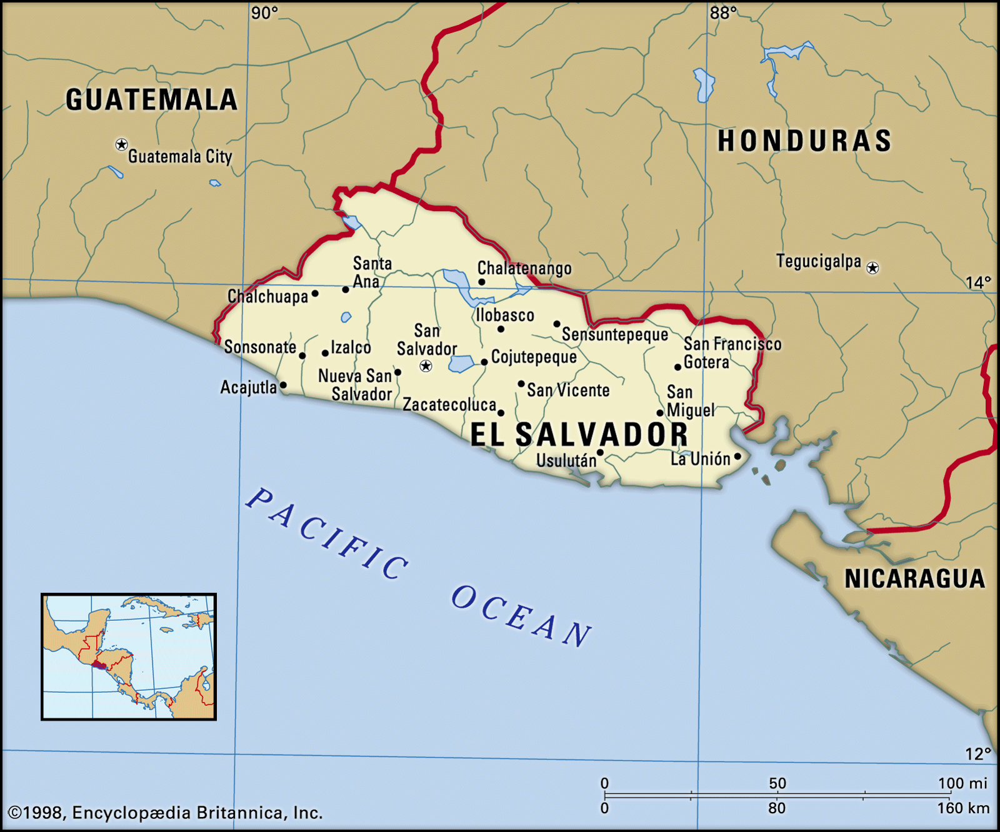
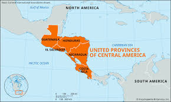

El Salvador is a small country in Central America. It is bordered by Honduras, Guatemala, and the Pacific Ocean.

Learn more fun facts here.
Before the White colonizers came to Central America, we were a region of Mayan and Cuzcarlec (pipil) tribes.

When the Spanish Colonizers arrived in Central America, El Salvador was part of the New Spain Viceroyalty. Then being thrown into the Captaincy General of Guatemala. and finally becoming part of the First Mexican Empire before seceded and becoming the Federal Republic of Central America. Which was dessolved in 1841, making El Salvador a sovereign state